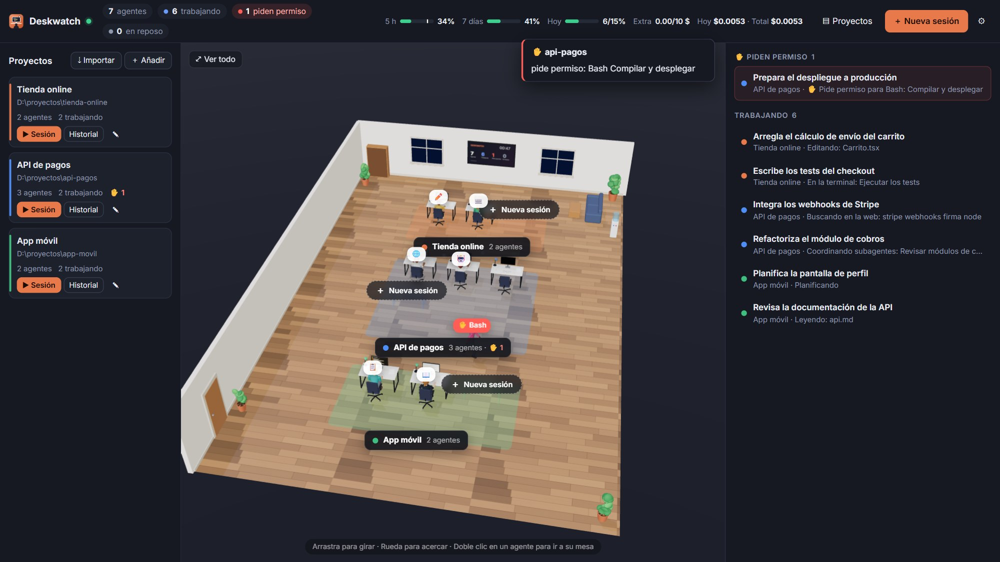
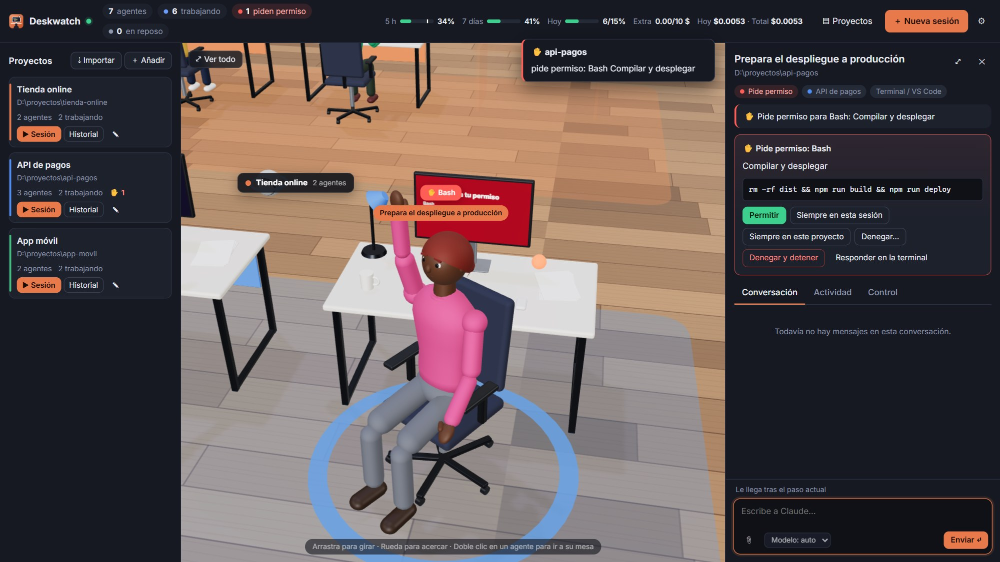
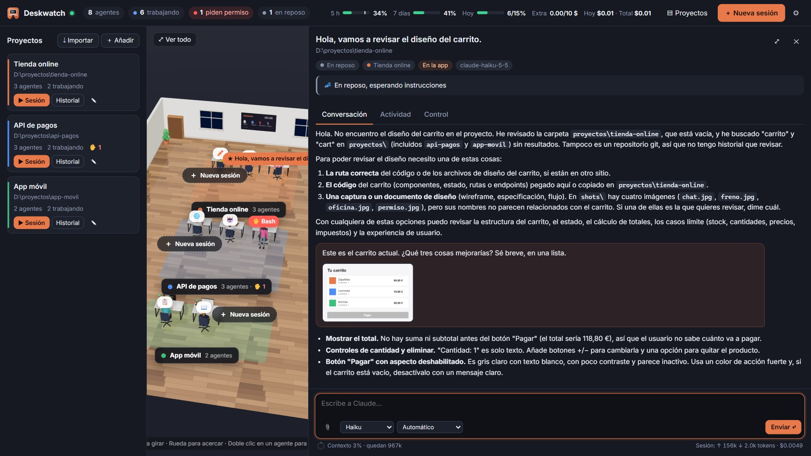
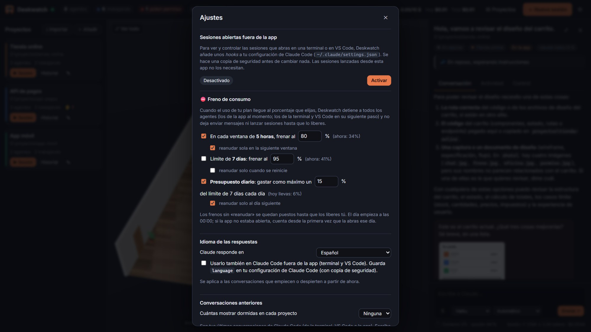

Cada sesión, una persona
Teclea cuando edita, mira papeles cuando lee, se pone ante la terminal, coordina subagentes que vuelan alrededor de su mesa y se queda dormida cuando termina.
En desarrollo · Windows · próximamente
Deskwatch convierte cada sesión de Claude Code en una persona sentada en su mesa, dentro de una oficina en 3D. Ves lo que hace cada uno, respondes a sus permisos y vigilas el consumo, todo desde un mismo sitio y sin tener VS Code abierto.
Aún no hay descarga pública. Dale a «Watch» en GitHub y te avisaremos cuando salga.

01 — La oficina
Teclea cuando edita, mira papeles cuando lee, se pone ante la terminal, coordina subagentes que vuelan alrededor de su mesa y se queda dormida cuando termina.
Cuando un agente necesita permiso, gira la silla y levanta la mano. Lo apruebas, lo deniegas o lo permites para siempre desde el panel, con aviso y sonido.
Texto en directo, Markdown, diffs de cada edición, imágenes y PDF pegados o arrastrados, comandos con «/» y el contexto que te queda, siempre a la vista.
Tus conversaciones anteriores esperan dormidas en su mesa. Escríbeles y continúan donde lo dejaron, sin abrir VS Code ni la terminal.
Ve el uso de tu plan de 5 horas y 7 días. Pon un tope por ventana o un presupuesto diario, y Deskwatch detiene a todos los agentes cuando se alcanza.
Encuentra las carpetas en las que ya usas Claude Code y les da su propia zona en la oficina, con color, modelo, permisos e instrucciones propias.

02 — Permisos
Ves exactamente qué quiere ejecutar y respondes en un clic. Tienes «siempre en esta sesión» y «siempre en este proyecto» para no repetir, y «denegar y detener» para cortar en seco.

03 — Conversación
El chat funciona como el de Claude Code. Pegas o arrastras imágenes y PDF, eliges modelo y permisos sobre la marcha, usas tus comandos y skills con «/», y ves el contexto y los tokens de cada sesión.

04 — Consumo
Por ejemplo: «como mucho un 15 % del límite semanal cada día» o «frenar al 80 % en cada ventana de 5 horas». Al llegar al tope, se detiene todo, y se reanuda solo en el siguiente periodo si así lo quieres.
05 — Cómo funciona
Una app de escritorio para Windows que lleva Claude Code dentro y usa la sesión de Claude que ya tienes iniciada.
Importa las carpetas en las que trabajas y coloca en la oficina tus últimas conversaciones. Si quieres, también sigue las sesiones de la terminal y de VS Code.
Lanza agentes, despierta conversaciones, responde permisos y vigila el consumo sin saltar entre ventanas.
06 — Preguntas
Está en desarrollo activo y todavía no hay descarga pública. Sigue el repositorio en GitHub («Watch» → «Custom» → «Releases») para enterarte en cuanto haya una versión.
Windows y una cuenta de Claude con acceso a Claude Code. Deskwatch incluye su propio Claude Code, así que no hace falta tener VS Code ni una terminal abiertos.
Deskwatch funciona en local: lee y controla las sesiones de tu propio equipo. Lo único que sale es lo que Claude Code ya envía a Claude para trabajar.
No. Deskwatch es un proyecto independiente que funciona con Claude Code. No está afiliado a Anthropic ni cuenta con su respaldo.
De momento se desarrolla para Windows. Otras plataformas están en la lista de ideas.
Si quieres enterarte cuando salga, sigue el proyecto en GitHub.
Seguir en GitHub